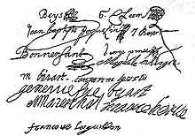

1643
• MOLI�RE
6 janvier : Moli�re re�oit 630 livres, sa part dans la succession maternelle et comme avancement d'hoirie du c�t� de son p�re, et renonce � la survivance de la charge de tapissier, qui sera transmise � un autre des enfants.
30 juin : Le contrat de soci�t� est sign� par Beys, Cl�rin, Bonnenfant, Pinel, Madeleine Malingre, la Des Urlis, les B�jart (Madeleine, Genevi�ve, Joseph) et Jean-Baptiste Poquelin. L'Illustre Th��tre s'installe au jeu de paume des M�tayers (faubourg Saint-Germain), y fait faire des travaux d'am�nagement, et engage quatre musiciens.
3 novembre : La troupe se rend � Rouen pour la foire de Saint-Romain.
• VIE TH��TRALE ET LITT�RAIRE
Corneille, Polyeucte, Le Menteur. Scarron, Jodelet ou le Ma�tre valet.
• POLITIQUE ET SOCI�T�
Mort de Louis XIII. R�gence d'Anne d'Autriche. Mazarin succ�de � Richelieu.
Condamnation de l'Augustinus de Jans�nius par la bulle In Eminente.
Victoire de Cond� sur les Espagnols � Rocroi.
• ARTS, SCIENCES ET RELIGION
A. Arnauld, La Fr�quente Communion.
Mort de Saint-Cyran.
